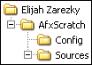

Описание
AfxScratch представляет собой приложение,
предназначенное для генерации проектов в формате Microsoft Visual C++ версий 6.0,
.NET (7.0), .NET 2003 (7.1), 2005 (8.0) и 2008 (9.0) на основании заранее подготовленных
шаблонов.
Порядок использования приложения состоит в следующем. В первую очередь, необходимо
выделить в списке Projects шаблон, на основе которого будет
формироваться проект. Список Macros при этом будет
отображать все макросы, использующиеся в данном шаблоне. Для назначения или изменения
значения макроса нужно выделить соответствующую ему строку и нажать на кнопку
Change value… (можно также выполнить двойной щелчок
левой кнопкой мышки по требуемой строке). И наконец, в поле
Location можно указать, где именно следует создать папку со
сгенерированным проектом (ее имя определяется значением макроса
$PROJECT$, а при его отсутствии — именем исходного шаблона). Ввод
значения в это поле осуществляется с помощью кнопки
 , расположенной справа
от него. После этого остается только нажать на кнопку
Generate для создания проекта; статусная панель слева от
нее будет отображать процесс записи файлов.
, расположенной справа
от него. После этого остается только нажать на кнопку
Generate для создания проекта; статусная панель слева от
нее будет отображать процесс записи файлов.
Кнопка Save as default позволяет сохранить текущие значения
макросов в качестве значений по умолчанию для выделенного шаблона; нажатие на кнопку
Restore defaults присваивает всем макросам значения по
умолчанию в соответствии с определениями в конфигурационном скрипте шаблона.
Системные требования:
- Windows 2000/XP/2003/Vista/7;
- некоторое количество свободной памяти.
Планы на будущее:
- больше шаблонов, хороших и разных;
- сохранение размеров колонок в списках проектов и макросов.
История версий
- 1.1.5794 (02.05.2011)
- Динамические библиотеки CRT и MFC обновлены до версии 9.0.30729.5570; подробности
можно найти в Microsoft security
bulletin MS11-025: Description of the security update for Visual C++ 2008 SP1
Redistributable Package.
- 1.1.5673 (09.01.2011)
- Немного усовершенствован процесс установки. В „универсальный“ инсталлятор
добавлены недостающие исходные файлы.
- 1.1.5669 (05.01.2011)
- Расширена структура конфигурационных файлов, описывающих шаблоны проектов.
Добавлены шаблоны проектов для Visual Studio версий .NET 2003 (7.1) и 2008 (9.0);
общее количество шаблонов теперь составляет 31 против 16 в предыдущей версии. При
установке „поверх“ создается резервная копия текущих шаблонов в отдельной
папке с именем вида AfxScratch.гггг-мм-дд.чч-мм-сс,
формируемым на основе текущих даты и времени. Разработка проекта „переведена“
под MS Visual C++ 2008 SP1; начиная с этой версии, совместимость
исходного кода с компилятором Visual C++ 7.1 SP1 не гарантируется. Для сборки
этой версии из исходных текстов необходимо использовать проект
Repository ревизии 711
или выше.
- 1.0.3839 (31.07.2007)
- К приложению и его исходному коду добавлено лицензионное соглашение —
Apache License, Version 2.0.
Шаблоны проектов переименованы в более „осмысленный“ вид, поэтому
перед установкой данной версии настоятельно рекомендуется удалить
предыдущую. Разработка проекта „переведена“ под MS Visual C++ 7.1
SP1; начиная с этой версии, совместимость исходного кода с
компилятором Visual C++ 7.0 SP1 не гарантируется. Для сборки этой версии из
исходных текстов необходимо использовать проект
Repository ревизии 91
или выше.
- 1.0.3345 (17.08.2006)
- Исправлена ошибка, приводившая к тому, что при использовании в Windows XP темы,
отличной от „Windows Classic“, в главном окне не отображались некоторые
элементы управления. Добавлено несколько новых шаблонов проектов (WinAPI/WTL под
Windows CE для Visual Studio 2005).
- 1.0.2807 (23.07.2005)
- Реализована возможность изменения (и восстановления при следующем запуске приложения)
размеров главного окна; добавлено несколько новых шаблонов проектов. Разработка проекта
„переведена“ под MS Visual C++ 7.0 SP1; начиная с этой
версии, совместимость исходного кода с компилятором Visual C++ 6.0 SP6 не
гарантируется.
- 1.0.2800 (16.07.2005)
- Добавлена поддержка „визуальных стилей“ Windows XP. К шаблонам проектов,
предназначенным для создания GUI-приложений, добавлены ресурсы типа
„манифест“. Добавлен шаблон „WinGeneric70“, позволяющий
генерировать проект минимального Win32 GUI-приложения для Visual C++ 7.0 (.NET 2002).
Во всех шаблонах проектов исправлен адрес веб-страницы „генератора“.
- 1.0.2461 (29.12.2004)
- Добавлена документация пользователя в формате HTML Help. Перед
установкой данной версии настоятельно рекомендуется штатным образом деинсталлировать
предыдущую.
- 1.0.2313 (09.08.2004)
- Исправлено несколько мелких ошибок. Немного улучшены шаблоны проектов.
- 1.0.2297 (25.07.2004)
- Исправлено несколько ошибок в шаблонах проектов. Исполняемый файл приложения
откомпилирован с оптимизацией по размеру.
- 1.0.2222 (14.05.2004)
- Немного улучшена работа списков проектов и макросов.
- 1.0.2183 (07.04.2004)
- Реализована типизация макросов, что позволило сделать генерацию для них значений по
умолчанию более „интеллектуальной“ и улучшить проверку корректности ввода
пользователя. Немного дополнены шаблоны проектов. Добавлено несколько „особых“
макросов.
- 1.0.2171 (27.03.2004)
- Реализована возможность назначения нестандартных иконок для списка шаблонов проектов.
Добавлено несколько новых шаблонов.
- 1.0.2164 (20.03.2004)
- Начальная версия приложения.
Техническая информация
Каждый шаблон проекта состоит из произвольного числа исходных файлов, находящихся в
отдельной папке, и конфигурационного скрипта в формате XML. Текстовые файлы, входящие
в шаблон, могут содержать макросы, которые при формировании проекта будут заменены на
указанные значения; макросы также могут использоваться в имени любого
„шаблонного“ файла. Если файл описан в конфигурационном скрипте как двоичный,
то никакого поиска макросов в его содержимом не производится и он просто копируется в
заданную папку. Таким образом, если какой-либо текстовый файл шаблона не содержит ни
одного макроса, то он может быть описан как двоичный, что позволит несколько ускорить
процесс формирования проекта. Заметим, что обратное действие (то есть пометка
действительно двоичного файла как текстового) может привести к сбою в работе приложения.
Шаблоны проектов должны
находиться в папке Elijah Zarezky\AfxScratch, расположенной
внутри application data folder for all users и имеющей структуру, показанную на рисунке
справа. Папка Config предназначена для хранения
конфигурационных скриптов; при запуске приложение перебирает все находящиеся в ней файлы
с расширением xml, формируя на их основании список доступных шаблонов. Сами же
„шаблонные“ файлы должны быть расположены в папке
Sources; еще раз подчеркнем, что внутри нее каждому проекту
должна соответствовать отдельная папка.
Структура конфигурационного скрипта
Рассмотрим структуру XML-файла, описывающего шаблон.
- Корневым является тег Project; атрибут
Name этого тега задает имя шаблона, отображаемое в колонке
Name списка Projects главного
окна приложения , и одновременно —
имя папки, в которой находятся файлы шаблона. Максимально допустимая длина имени
шаблона составляет 31 символ. Имя папки, в которой находятся файлы шаблона, начиная с
версии 1.1, задается атрибутом SrcRoot. Атрибут
Description задает описание шаблона (длиной не более 255
символов), которое будет отображаться в одноименной колонке списка проектов.
Необязательный атрибут Icon позволяет задать имя файла
иконки, которая будет отображаться в списке Projects слева
от имени проекта; значение этого атрибута не должно содержать пути к файлу, а сам файл
должен находиться в одной папке с конфигурационным скриптом. Появивишиеся в версии 1.1
атрибуты DevEnv и Framework
позволяют указать (в произвольной форме) интегрированную среду разработки, для которой
предназначен данный проект (максимум 15 символов), и используемый им „каркас“
(MFC, WTL, etc, максимум 31 символ) соответственно.
- Дочерний по отношению к Project
тег Macros не имеет атрибутов, но является родительским для
одного или нескольких тегов Macro, каждый из которых
определяет макрос, использующийся в исходных текстах шаблона.
- Каждый тег Macro имеет
атрибуты Name и Description,
задающие соответственно имя макроса (длиной не более 15 символов) и его описание,
максимальная длина которого составляет 255 символов. Этот тег может иметь также атрибут
Default, задающий для макроса значение по умолчанию
(длиной не более 63 символов); при отсутствии данного атрибута начальным значением
макроса, не считая особых случаев, будет пустая строка. Начиная с версии 1.0.2183,
поддерживается необязательный атрибут Type, определяющий
тип макроса, который может иметь значения string
(строка), number (целое число) или
uuid (универсальный уникальный идентификатор). Если тип
макроса отличается от number и
uuid или вообще не указан — он считается строковым.
При отсутствии явно указанных значений по умолчанию для строкового макроса таковым
становится пустая строка, для числового — 0, а для макросов типа
uuid генерируется новый уникальный идентификатор.
- Тег Files, являющийся, как и
Macros, дочерним по отношению к
Project, тоже не имеет собственных атрибутов; он выступает
в качестве родительского для одного или нескольких тегов
File, каждый из которых описывает исходный файл шаблона.
- Обязательным для тега File
является атрибут Name, задающий имя исходного файла
относительно папки, в которой находятся файлы шаблона. Атрибут
Type определяет, будет ли для данного файла производиться
поиск макросов и их замена на указанные пользователем значения: если этот атрибут имеет
значение binary, то файл считается двоичным и копируется
в целевую папку без изменений; в противном случае (атрибут
Type отсутствует или имеет значение, отличное от
binary), файл считается текстовым и в нем выполняется
поиск макросов, которые определены в данном шаблоне, и их замена на указанные
пользователем значения.
В качестве примера ниже приведен конфигурационный скрипт шаблона
AfxConsole предназначенного для генерации проектов
консольных приложений, использующих MFC.
<?xml version="1.0" encoding="Windows-1251"?>
<Project Name="AfxConsole" Description="Generic console application">
<Macros>
<Macro Name="$PROJECT$" Description="Name of the project"/>
<Macro Name="$AUTHOR$" Description="Author of the project"/>
<Macro Name="$COMPANY$" Description="Company name"/>
</Macros>
<Files>
<File Name="\$PROJECT$.dsp" Type="text"/>
<File Name="\Source\stdafx.cpp" Type="text"/>
<File Name="\Source\stdafx.h" Type="text"/>
<File Name="\Source\EntryPoint.cpp" Type="text"/>
<File Name="\Source\$PROJECT$.rc" Type="text"/>
<File Name="\Source\Resource.h" Type="text"/>
<File Name="\Source\BinRes\AppIcon.ico" Type="binary"/>
</Files>
</Project>
Особые макросы
Перечисленные ниже макросы будут иметь при генерации проекта указанные значения,
даже если сделать их доступными для изменения, поместив соответствующие имена в
конфигурационный скрипт шаблона.
- $GENERATOR$
- Строка, содержащая название и номер версии
приложения.
- $DAY$, $MONTH$, $YEAR$
- Строковое представление текущих дня, месяца и года
соответственно.
- $HOUR$, $MINUTE$, $SECOND$
- Строковое представление текущих часа, минуты и секунды
соответственно.
- $DATE$
- Строковое представление текущей даты в формате
dd.MM.yyyy.
- $TIME$
- Строковое представление текущего времени в формате HH:mm:ss.
Если в конфигурационном скрипте отсутствует макрос с именем $PROJECT$
или на момент генерации проекта для него не указано значение, то вместо него
используется имя шаблона.
Если в конфигурационном скрипте присутствует макрос с именем $AUTHOR$
и для него не указано значение по умолчанию, то в качестве такого значения используется
имя текущего пользователя операционной системы.
Если в конфигурационном скрипте присутствует макрос с именем $COMPANY$
и для него не указано значение по умолчанию, то в качестве такого значения используется
название организации, на которую зарегистрирована данная копия операционной системы.
Если в конфигурационном скрипте присутствует макрос с именем $VERMAJOR$
и для него не указано значение по умолчанию, то в качестве такого значения используется 1.
Если в конфигурационном скрипте присутствует макрос с именем $VERBUILD$
и для него не указано значение по умолчанию, то в качестве такого значения используется
число, генерируемое на основании текущей системной даты.
AfxScratch на Google Code
Начиная с 19 декабря 2007 года, проект AfxScratch, помимо „родного“ сайта, размещен
также и на Google Code; его главная страница доступна
по адресу http://afx-scratch.googlecode.com.
Там можно найти как последние „опытные сборки“ (development builds), так и зеркало
репозитория Subversion с последними ревизиями
исходных текстов проекта. Для анонимного доступа на чтение к этому зеркалу и получения
локальных копий всех файлов, необходимых для самостоятельной сборки, необходимо выполнить
следующие действия:
- Создать где-либо в файловой системе новую папку, назвав ее,
например, GoogleCode.
- Перейти в эту папку в командной строке и последовательно выполнить
команды
svn checkout http://repositorium.googlecode.com/svn/trunk/ Repository
svn checkout http://afx-scratch.googlecode.com/svn/trunk/ AfxScratch
После этого, для сборки проекта достаточно открыть файл
AfxScratch.2008.sln из папки
GoogleCode\AfxScratch в среде Microsoft Visual Studio 2008,
сделать AfxScratch „стартовым проектом“ и выполнить команду
Build Solution. Полностью автоматизированную сборку проекта и
его дистрибутива можно выполнить при помощи утилиты
NAnt, передав ей на вход файл
AfxScratch.2008.build — выполнять соответствующую команду
нужно из Visual Studio 2008 Command Prompt, предварительно перейдя в папку
GoogleCode\AfxScratch.
Авторские права © 2004—2011 И.Зарецкий